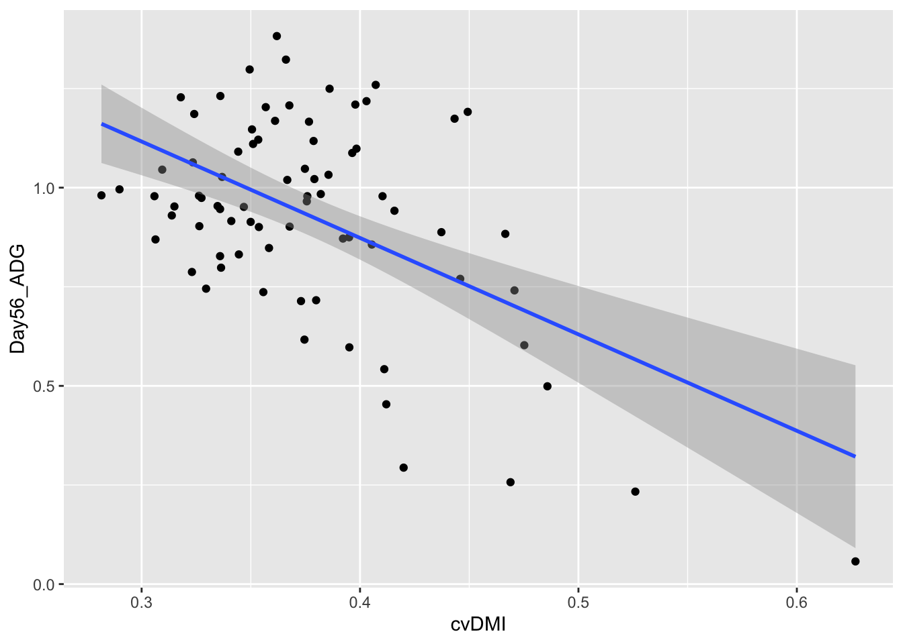
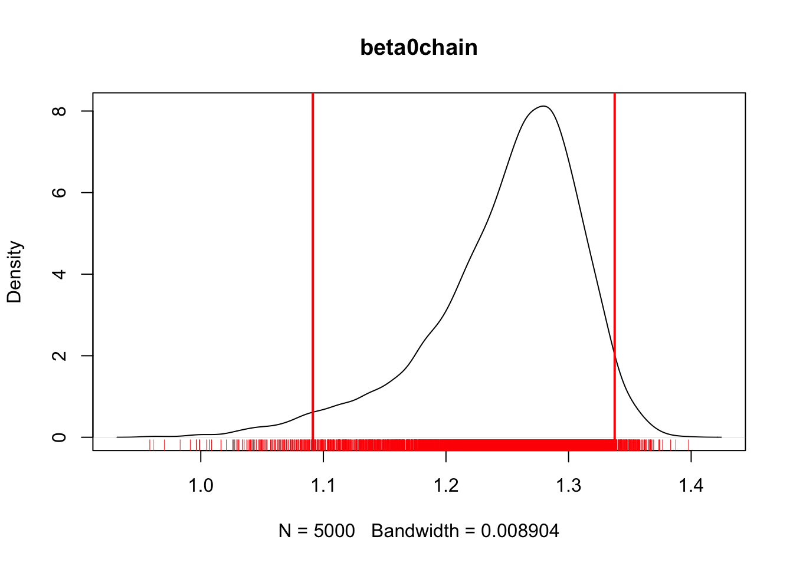
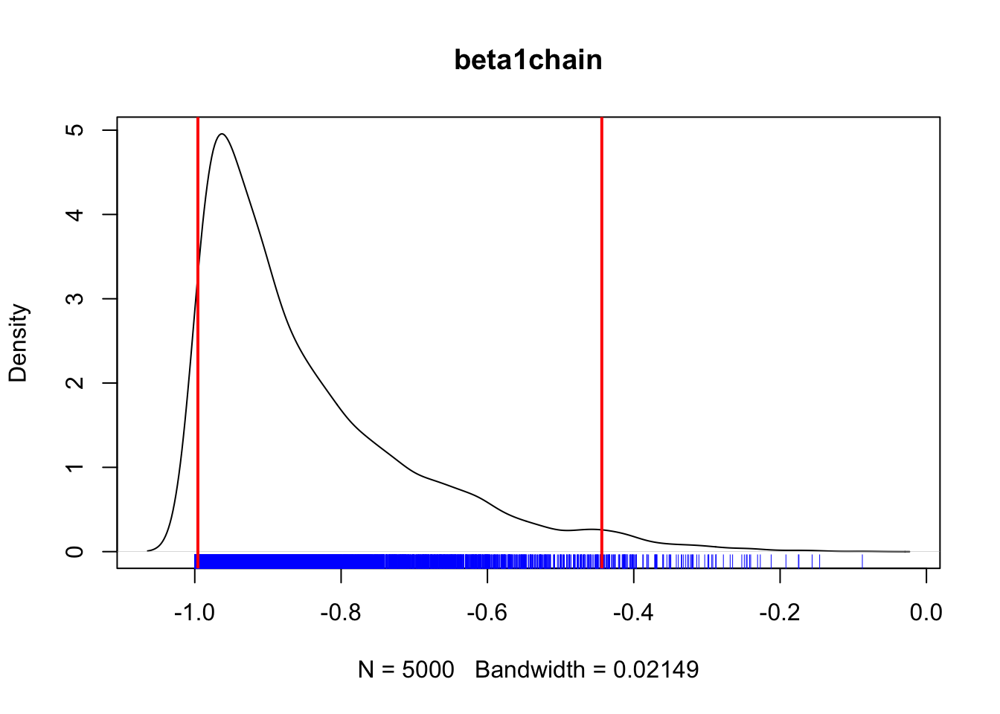
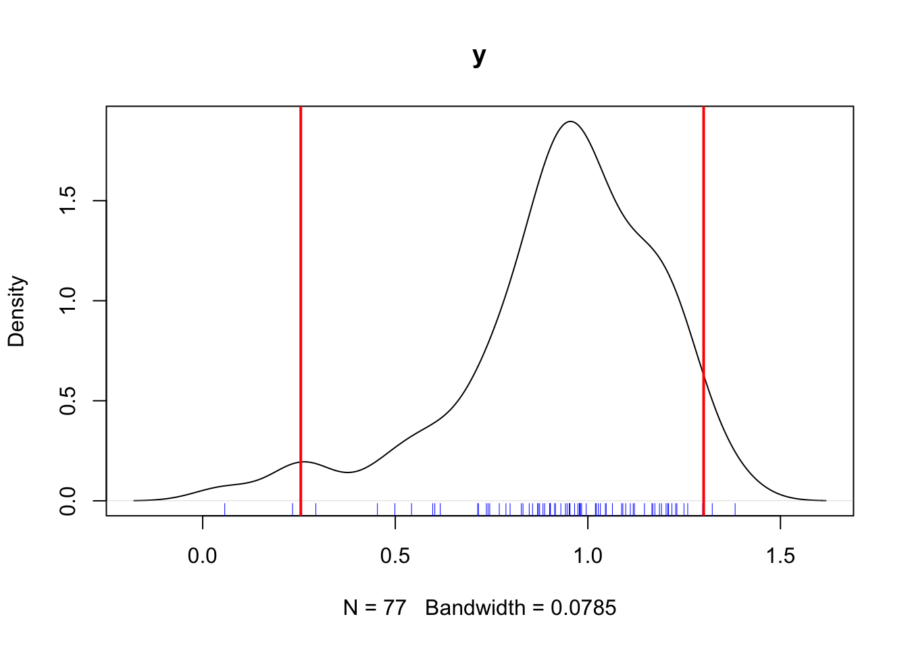
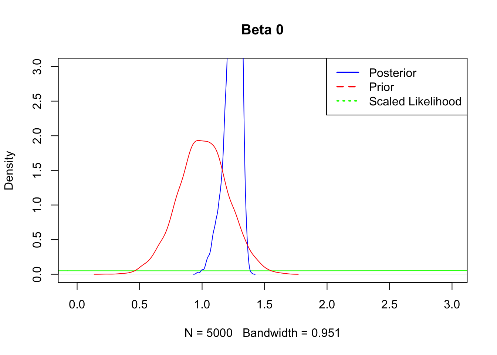
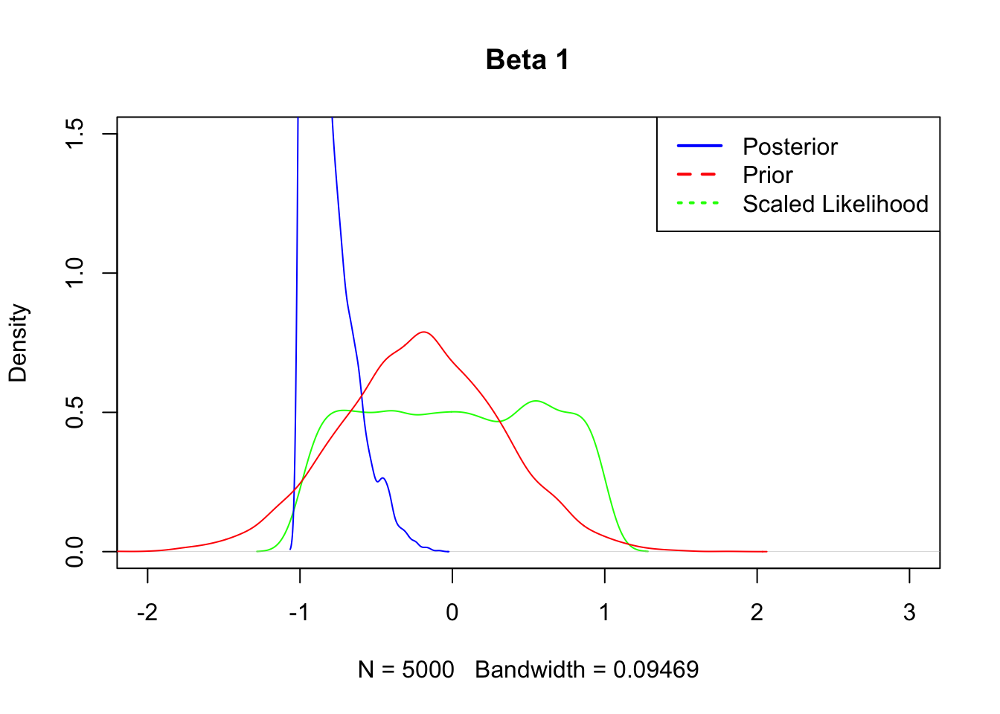

Chapter 5 Modeling
5.1 Libraries
# Libraries to install
# List of packages to check/install
packages <- c("data.table", "tidyverse", "rjags", "MCMCvis")
# Function to check and install packages
install_if_missing = function(pkg) {
if (!require(pkg, character.only = TRUE)) {
install.packages(pkg, dependencies = TRUE)
library(pkg, character.only = TRUE)
} else {
cat(paste("Package", pkg, "is already installed.\n"))
}
}
# Apply the function to each package in the list
lapply(packages, install_if_missing)## Package data.table is already installed.
## Package tidyverse is already installed.
## Package rjags is already installed.
## Package MCMCvis is already installed.## [[1]]
## NULL
##
## [[2]]
## NULL
##
## [[3]]
## NULL
##
## [[4]]
## NULL5.2 Data
We have a dataset representing heifer performance, feeding behavior, and dry matter intake over a 56 day back grounding period. Heifers were assigned to a 2x2 crossover design to test a feed additives effect on animal behavior, performance, and morbidity during weaning.
## # A tibble: 6 × 21
## VID Pen CreepTrt WeanTrt D_42_BW Creep_Gain Shipping_Loss Day56_InitialBW Day56_ADG Day56_MMBW
## <dbl> <dbl> <chr> <chr> <dbl> <dbl> <dbl> <dbl> <dbl> <dbl>
## 1 248 8 A A 261. 34.5 -5.44 287. 1.22 1.22
## 2 249 8 A A 210. 23.1 -4.54 223. 0.946 0.946
## 3 276 6 B A 177. 29.0 -3.63 200. 1.15 1.15
## 4 298 6 B A 198. 30.8 -6.80 218. 1.06 1.06
## 5 322 8 A A 198. 34.5 -3.63 233. 1.30 1.30
## 6 346 6 B A 189. 13.6 -2.27 185. 0.716 0.716
## # ℹ 11 more variables: Day56_DMI <dbl>, Day56_Residual <dbl>, D_1_EV <dbl>, AVE_TTB <dbl>,
## # BVFREQ <dbl>, BVDUR <dbl>, BVFREQsd <dbl>, BVDURsd <dbl>, uDMI <dbl>, sdDMI <dbl>, cvDMI <dbl>## VID Pen CreepTrt WeanTrt D_42_BW Creep_Gain
## Min. :248.0 Min. :5.000 Length:77 Length:77 Min. :160.0 Min. : 5.897
## 1st Qu.:672.0 1st Qu.:6.000 Class :character Class :character 1st Qu.:179.5 1st Qu.:23.133
## Median :714.0 Median :7.000 Mode :character Mode :character Median :195.0 Median :30.844
## Mean :670.8 Mean :6.519 Mean :195.3 Mean :29.949
## 3rd Qu.:756.0 3rd Qu.:7.000 3rd Qu.:207.3 3rd Qu.:35.834
## Max. :821.0 Max. :8.000 Max. :260.9 Max. :84.368
## Shipping_Loss Day56_InitialBW Day56_ADG Day56_MMBW Day56_DMI
## Min. :-52.6167 Min. :155.5 Min. :0.05724 Min. : 0.7139 Min. :3.916
## 1st Qu.:-12.2470 1st Qu.:196.8 1st Qu.:0.83159 1st Qu.:38.3352 1st Qu.:5.860
## Median : -8.1647 Median :208.4 Median :0.96550 Median :47.4249 Median :6.244
## Mean : -9.2486 Mean :208.5 Mean :0.93066 Mean :37.1065 Mean :6.152
## 3rd Qu.: -5.4431 3rd Qu.:220.5 3rd Qu.:1.11022 3rd Qu.:50.5209 3rd Qu.:6.542
## Max. : 0.9072 Max. :287.2 Max. :1.38238 Max. :57.2651 Max. :7.477
## Day56_Residual D_1_EV AVE_TTB BVFREQ BVDUR
## Min. :-0.877272 Min. :0.0000 Min. : 21.14 Min. : 37.57 Min. : 3053
## 1st Qu.:-0.209799 1st Qu.:0.3890 1st Qu.: 32.82 1st Qu.: 60.80 1st Qu.: 5776
## Median :-0.088852 Median :0.5440 Median : 48.79 Median : 75.09 Median : 6589
## Mean : 0.001859 Mean :0.5812 Mean : 54.79 Mean : 72.25 Mean : 6915
## 3rd Qu.: 0.247658 3rd Qu.:0.6670 3rd Qu.: 68.16 3rd Qu.: 82.77 3rd Qu.: 7650
## Max. : 1.011334 Max. :2.2210 Max. :147.13 Max. :130.86 Max. :13055
## BVFREQsd BVDURsd uDMI sdDMI cvDMI
## Min. : 14.78 Min. : 1672 Min. :5.103 Min. :1.947 Min. :0.2816
## 1st Qu.: 60.80 1st Qu.: 5776 1st Qu.:6.374 1st Qu.:2.326 1st Qu.:0.3364
## Median : 75.09 Median : 6589 Median :6.718 Median :2.432 Median :0.3676
## Mean : 71.65 Mean : 6810 Mean :6.681 Mean :2.496 Mean :0.3764
## 3rd Qu.: 82.77 3rd Qu.: 7650 3rd Qu.:7.033 3rd Qu.:2.645 3rd Qu.:0.3984
## Max. :130.86 Max. :13055 Max. :7.860 Max. :3.226 Max. :0.62685.3 Excercise 1
## [1] "VID" "Pen" "CreepTrt" "WeanTrt" "D_42_BW"
## [6] "Creep_Gain" "Shipping_Loss" "Day56_InitialBW" "Day56_ADG" "Day56_MMBW"
## [11] "Day56_DMI" "Day56_Residual" "D_1_EV" "AVE_TTB" "BVFREQ"
## [16] "BVDUR" "BVFREQsd" "BVDURsd" "uDMI" "sdDMI"
## [21] "cvDMI"## `geom_smooth()` using formula = 'y ~ x'
Next we need to define the Jags model# Data list ----
# Data
data_list <- list(
x = heifer$cvDMI, # Example predictor values
y = heifer$Day56_ADG, # Example response values
N = nrow(heifer) # Number of observations
)
## Jags model ----
# Define the model
model_string <- "
model {
for (i in 1:N) {
y[i] ~ dnorm(mu[i], tau)
mu[i] <- beta0 + beta1 * x[i]
}
# Priors
beta0 ~ dunif(-10, 10)
beta1 ~ dunif(-1, 1)
sigma ~ dunif(0, 100)
tau <- 1 / (sigma * sigma)
}
"
# Initial values
inits <- list(
list(beta0 = 0, beta1 = 0, sigma = 1)
)
# Parameters to monitor
params <- c("beta0", "beta1", "sigma", 'y')Now we have the model set up, we are ready to run the model through jags
# Run the model
model <- jags.model(textConnection(model_string), data = data_list, inits = inits, n.chains = 1)## Compiling model graph
## Resolving undeclared variables
## Allocating nodes
## Graph information:
## Observed stochastic nodes: 77
## Unobserved stochastic nodes: 3
## Total graph size: 320
##
## Initializing model
##
## | | | 0% | |+ | 2% | |++ | 4% | |+++ | 6% | |++++ | 8% | |+++++ | 10% | |++++++ | 12% | |+++++++ | 14% | |++++++++ | 16% | |+++++++++ | 18% | |++++++++++ | 20% | |+++++++++++ | 22% | |++++++++++++ | 24% | |+++++++++++++ | 26% | |++++++++++++++ | 28% | |+++++++++++++++ | 30% | |++++++++++++++++ | 32% | |+++++++++++++++++ | 34% | |++++++++++++++++++ | 36% | |+++++++++++++++++++ | 38% | |++++++++++++++++++++ | 40% | |+++++++++++++++++++++ | 42% | |++++++++++++++++++++++ | 44% | |+++++++++++++++++++++++ | 46% | |++++++++++++++++++++++++ | 48% | |+++++++++++++++++++++++++ | 50% | |++++++++++++++++++++++++++ | 52% | |+++++++++++++++++++++++++++ | 54% | |++++++++++++++++++++++++++++ | 56% | |+++++++++++++++++++++++++++++ | 58% | |++++++++++++++++++++++++++++++ | 60% | |+++++++++++++++++++++++++++++++ | 62% | |++++++++++++++++++++++++++++++++ | 64% | |+++++++++++++++++++++++++++++++++ | 66% | |++++++++++++++++++++++++++++++++++ | 68% | |+++++++++++++++++++++++++++++++++++ | 70% | |++++++++++++++++++++++++++++++++++++ | 72% | |+++++++++++++++++++++++++++++++++++++ | 74% | |++++++++++++++++++++++++++++++++++++++ | 76% | |+++++++++++++++++++++++++++++++++++++++ | 78% | |++++++++++++++++++++++++++++++++++++++++ | 80% | |+++++++++++++++++++++++++++++++++++++++++ | 82% | |++++++++++++++++++++++++++++++++++++++++++ | 84% | |+++++++++++++++++++++++++++++++++++++++++++ | 86% | |++++++++++++++++++++++++++++++++++++++++++++ | 88% | |+++++++++++++++++++++++++++++++++++++++++++++ | 90% | |++++++++++++++++++++++++++++++++++++++++++++++ | 92% | |+++++++++++++++++++++++++++++++++++++++++++++++ | 94% | |++++++++++++++++++++++++++++++++++++++++++++++++ | 96% | |+++++++++++++++++++++++++++++++++++++++++++++++++ | 98% | |++++++++++++++++++++++++++++++++++++++++++++++++++| 100%## | | | 0% | |* | 2% | |** | 4% | |*** | 6% | |**** | 8% | |***** | 10% | |****** | 12% | |******* | 14% | |******** | 16% | |********* | 18% | |********** | 20% | |*********** | 22% | |************ | 24% | |************* | 26% | |************** | 28% | |*************** | 30% | |**************** | 32% | |***************** | 34% | |****************** | 36% | |******************* | 38% | |******************** | 40% | |********************* | 42% | |********************** | 44% | |*********************** | 46% | |************************ | 48% | |************************* | 50% | |************************** | 52% | |*************************** | 54% | |**************************** | 56% | |***************************** | 58% | |****************************** | 60% | |******************************* | 62% | |******************************** | 64% | |********************************* | 66% | |********************************** | 68% | |*********************************** | 70% | |************************************ | 72% | |************************************* | 74% | |************************************** | 76% | |*************************************** | 78% | |**************************************** | 80% | |***************************************** | 82% | |****************************************** | 84% | |******************************************* | 86% | |******************************************** | 88% | |********************************************* | 90% | |********************************************** | 92% | |*********************************************** | 94% | |************************************************ | 96% | |************************************************* | 98% | |**************************************************| 100%## | | | 0% | |* | 2% | |** | 4% | |*** | 6% | |**** | 8% | |***** | 10% | |****** | 12% | |******* | 14% | |******** | 16% | |********* | 18% | |********** | 20% | |*********** | 22% | |************ | 24% | |************* | 26% | |************** | 28% | |*************** | 30% | |**************** | 32% | |***************** | 34% | |****************** | 36% | |******************* | 38% | |******************** | 40% | |********************* | 42% | |********************** | 44% | |*********************** | 46% | |************************ | 48% | |************************* | 50% | |************************** | 52% | |*************************** | 54% | |**************************** | 56% | |***************************** | 58% | |****************************** | 60% | |******************************* | 62% | |******************************** | 64% | |********************************* | 66% | |********************************** | 68% | |*********************************** | 70% | |************************************ | 72% | |************************************* | 74% | |************************************** | 76% | |*************************************** | 78% | |**************************************** | 80% | |***************************************** | 82% | |****************************************** | 84% | |******************************************* | 86% | |******************************************** | 88% | |********************************************* | 90% | |********************************************** | 92% | |*********************************************** | 94% | |************************************************ | 96% | |************************************************* | 98% | |**************************************************| 100%And do a preliminary look at the results.
beta0chain = MCMCchains(samples, params = 'beta0')
plot(density(beta0chain), main = "beta0chain")
rug(beta0chain, co = 'red')
abline(v = quantile(beta0chain, c(.025, .975)), col = "red", lwd = 2)
## 2.5% 97.5%
## 1.091424 1.337607## [1] 1.249529beta1chain = MCMCchains(samples, params = 'beta1')
plot(density(beta1chain), main = 'beta1chain')
rug(beta1chain, col = 'blue')
abline(v = quantile(beta1chain, c(.025, .975)), col = "red", lwd = 2)
## 2.5% 97.5%
## -0.9957234 -0.4437010y = MCMCpstr(samples, params = 'y')
plot(density(y$y), main = 'y')
rug(y$y, col = 'blue')
abline(v = quantile(y$y, c(.025, .975)), col = "red", lwd = 2)
## 2.5% 97.5%
## 0.2546595 1.3006211Summarise results
##
## Iterations = 2001:7000
## Thinning interval = 1
## Number of chains = 1
## Sample size per chain = 5000
##
## 1. Empirical mean and standard deviation for each variable,
## plus standard error of the mean:
##
## Mean SD Naive SE Time-series SE
## beta0 1.24953 0.06183 0.0008744 0.0037977
## beta1 -0.84624 0.14707 0.0020799 0.0095652
## sigma 0.24252 0.02085 0.0002949 0.0004627
## y[1] 1.21822 0.00000 0.0000000 0.0000000
## y[2] 0.94606 0.00000 0.0000000 0.0000000
## y[3] 1.14694 0.00000 0.0000000 0.0000000
## y[4] 1.06378 0.00000 0.0000000 0.0000000
## y[5] 1.29814 0.00000 0.0000000 0.0000000
## y[6] 0.71603 0.00000 0.0000000 0.0000000
## y[7] 1.22794 0.00000 0.0000000 0.0000000
## y[8] 1.08754 0.00000 0.0000000 0.0000000
## y[9] 1.04542 0.00000 0.0000000 0.0000000
## y[10] 0.95362 0.00000 0.0000000 0.0000000
## y[11] 0.98386 0.00000 0.0000000 0.0000000
## y[12] 1.11778 0.00000 0.0000000 0.0000000
## y[13] 1.04758 0.00000 0.0000000 0.0000000
## y[14] 0.71387 0.00000 0.0000000 0.0000000
## y[15] 0.91366 0.00000 0.0000000 0.0000000
## y[16] 0.79811 0.00000 0.0000000 0.0000000
## y[17] 0.85642 0.00000 0.0000000 0.0000000
## y[18] 1.16638 0.00000 0.0000000 0.0000000
## y[19] 0.91582 0.00000 0.0000000 0.0000000
## y[20] 0.86938 0.00000 0.0000000 0.0000000
## y[21] 0.74087 0.00000 0.0000000 0.0000000
## y[22] 1.20958 0.00000 0.0000000 0.0000000
## y[23] 0.97846 0.00000 0.0000000 0.0000000
## y[24] 1.12102 0.00000 0.0000000 0.0000000
## y[25] 0.90286 0.00000 0.0000000 0.0000000
## y[26] 0.97414 0.00000 0.0000000 0.0000000
## y[27] 0.83159 0.00000 0.0000000 0.0000000
## y[28] 0.87478 0.00000 0.0000000 0.0000000
## y[29] 1.19122 0.00000 0.0000000 0.0000000
## y[30] 1.16854 0.00000 0.0000000 0.0000000
## y[31] 1.02166 0.00000 0.0000000 0.0000000
## y[32] 0.90178 0.00000 0.0000000 0.0000000
## y[33] 0.95254 0.00000 0.0000000 0.0000000
## y[34] 1.09078 0.00000 0.0000000 0.0000000
## y[35] 0.23328 0.00000 0.0000000 0.0000000
## y[36] 0.88342 0.00000 0.0000000 0.0000000
## y[37] 0.97846 0.00000 0.0000000 0.0000000
## y[38] 0.59723 0.00000 0.0000000 0.0000000
## y[39] 0.82727 0.00000 0.0000000 0.0000000
## y[40] 0.29375 0.00000 0.0000000 0.0000000
## y[41] 0.95146 0.00000 0.0000000 0.0000000
## y[42] 1.23118 0.00000 0.0000000 0.0000000
## y[43] 1.18582 0.00000 0.0000000 0.0000000
## y[44] 1.02706 0.00000 0.0000000 0.0000000
## y[45] 0.97954 0.00000 0.0000000 0.0000000
## y[46] 0.99574 0.00000 0.0000000 0.0000000
## y[47] 0.94174 0.00000 0.0000000 0.0000000
## y[48] 0.88774 0.00000 0.0000000 0.0000000
## y[49] 0.90070 0.00000 0.0000000 0.0000000
## y[50] 0.54215 0.00000 0.0000000 0.0000000
## y[51] 1.20310 0.00000 0.0000000 0.0000000
## y[52] 0.92986 0.00000 0.0000000 0.0000000
## y[53] 1.09834 0.00000 0.0000000 0.0000000
## y[54] 1.24954 0.00000 0.0000000 0.0000000
## y[55] 0.87154 0.00000 0.0000000 0.0000000
## y[56] 1.17394 0.00000 0.0000000 0.0000000
## y[57] 0.98062 0.00000 0.0000000 0.0000000
## y[58] 0.84779 0.00000 0.0000000 0.0000000
## y[59] 0.77003 0.00000 0.0000000 0.0000000
## y[60] 1.32298 0.00000 0.0000000 0.0000000
## y[61] 0.61667 0.00000 0.0000000 0.0000000
## y[62] 0.97846 0.00000 0.0000000 0.0000000
## y[63] 0.74519 0.00000 0.0000000 0.0000000
## y[64] 0.05724 0.00000 0.0000000 0.0000000
## y[65] 0.60263 0.00000 0.0000000 0.0000000
## y[66] 1.11022 0.00000 0.0000000 0.0000000
## y[67] 1.25926 0.00000 0.0000000 0.0000000
## y[68] 1.01950 0.00000 0.0000000 0.0000000
## y[69] 0.25704 0.00000 0.0000000 0.0000000
## y[70] 0.49895 0.00000 0.0000000 0.0000000
## y[71] 0.45359 0.00000 0.0000000 0.0000000
## y[72] 1.38238 0.00000 0.0000000 0.0000000
## y[73] 0.96550 0.00000 0.0000000 0.0000000
## y[74] 0.78731 0.00000 0.0000000 0.0000000
## y[75] 1.20742 0.00000 0.0000000 0.0000000
## y[76] 1.03246 0.00000 0.0000000 0.0000000
## y[77] 0.73655 0.00000 0.0000000 0.0000000
##
## 2. Quantiles for each variable:
##
## 2.5% 25% 50% 75% 97.5%
## beta0 1.09142 1.21915 1.26191 1.29197 1.33761
## beta1 -0.99572 -0.95570 -0.89639 -0.77993 -0.44370
## sigma 0.20550 0.22812 0.24119 0.25567 0.28751
## y[1] 1.21822 1.21822 1.21822 1.21822 1.21822
## y[2] 0.94606 0.94606 0.94606 0.94606 0.94606
## y[3] 1.14694 1.14694 1.14694 1.14694 1.14694
## y[4] 1.06378 1.06378 1.06378 1.06378 1.06378
## y[5] 1.29814 1.29814 1.29814 1.29814 1.29814
## y[6] 0.71603 0.71603 0.71603 0.71603 0.71603
## y[7] 1.22794 1.22794 1.22794 1.22794 1.22794
## y[8] 1.08754 1.08754 1.08754 1.08754 1.08754
## y[9] 1.04542 1.04542 1.04542 1.04542 1.04542
## y[10] 0.95362 0.95362 0.95362 0.95362 0.95362
## y[11] 0.98386 0.98386 0.98386 0.98386 0.98386
## y[12] 1.11778 1.11778 1.11778 1.11778 1.11778
## y[13] 1.04758 1.04758 1.04758 1.04758 1.04758
## y[14] 0.71387 0.71387 0.71387 0.71387 0.71387
## y[15] 0.91366 0.91366 0.91366 0.91366 0.91366
## y[16] 0.79811 0.79811 0.79811 0.79811 0.79811
## y[17] 0.85642 0.85642 0.85642 0.85642 0.85642
## y[18] 1.16638 1.16638 1.16638 1.16638 1.16638
## y[19] 0.91582 0.91582 0.91582 0.91582 0.91582
## y[20] 0.86938 0.86938 0.86938 0.86938 0.86938
## y[21] 0.74087 0.74087 0.74087 0.74087 0.74087
## y[22] 1.20958 1.20958 1.20958 1.20958 1.20958
## y[23] 0.97846 0.97846 0.97846 0.97846 0.97846
## y[24] 1.12102 1.12102 1.12102 1.12102 1.12102
## y[25] 0.90286 0.90286 0.90286 0.90286 0.90286
## y[26] 0.97414 0.97414 0.97414 0.97414 0.97414
## y[27] 0.83159 0.83159 0.83159 0.83159 0.83159
## y[28] 0.87478 0.87478 0.87478 0.87478 0.87478
## y[29] 1.19122 1.19122 1.19122 1.19122 1.19122
## y[30] 1.16854 1.16854 1.16854 1.16854 1.16854
## y[31] 1.02166 1.02166 1.02166 1.02166 1.02166
## y[32] 0.90178 0.90178 0.90178 0.90178 0.90178
## y[33] 0.95254 0.95254 0.95254 0.95254 0.95254
## y[34] 1.09078 1.09078 1.09078 1.09078 1.09078
## y[35] 0.23328 0.23328 0.23328 0.23328 0.23328
## y[36] 0.88342 0.88342 0.88342 0.88342 0.88342
## y[37] 0.97846 0.97846 0.97846 0.97846 0.97846
## y[38] 0.59723 0.59723 0.59723 0.59723 0.59723
## y[39] 0.82727 0.82727 0.82727 0.82727 0.82727
## y[40] 0.29375 0.29375 0.29375 0.29375 0.29375
## y[41] 0.95146 0.95146 0.95146 0.95146 0.95146
## y[42] 1.23118 1.23118 1.23118 1.23118 1.23118
## y[43] 1.18582 1.18582 1.18582 1.18582 1.18582
## y[44] 1.02706 1.02706 1.02706 1.02706 1.02706
## y[45] 0.97954 0.97954 0.97954 0.97954 0.97954
## y[46] 0.99574 0.99574 0.99574 0.99574 0.99574
## y[47] 0.94174 0.94174 0.94174 0.94174 0.94174
## y[48] 0.88774 0.88774 0.88774 0.88774 0.88774
## y[49] 0.90070 0.90070 0.90070 0.90070 0.90070
## y[50] 0.54215 0.54215 0.54215 0.54215 0.54215
## y[51] 1.20310 1.20310 1.20310 1.20310 1.20310
## y[52] 0.92986 0.92986 0.92986 0.92986 0.92986
## y[53] 1.09834 1.09834 1.09834 1.09834 1.09834
## y[54] 1.24954 1.24954 1.24954 1.24954 1.24954
## y[55] 0.87154 0.87154 0.87154 0.87154 0.87154
## y[56] 1.17394 1.17394 1.17394 1.17394 1.17394
## y[57] 0.98062 0.98062 0.98062 0.98062 0.98062
## y[58] 0.84779 0.84779 0.84779 0.84779 0.84779
## y[59] 0.77003 0.77003 0.77003 0.77003 0.77003
## y[60] 1.32298 1.32298 1.32298 1.32298 1.32298
## y[61] 0.61667 0.61667 0.61667 0.61667 0.61667
## y[62] 0.97846 0.97846 0.97846 0.97846 0.97846
## y[63] 0.74519 0.74519 0.74519 0.74519 0.74519
## y[64] 0.05724 0.05724 0.05724 0.05724 0.05724
## y[65] 0.60263 0.60263 0.60263 0.60263 0.60263
## y[66] 1.11022 1.11022 1.11022 1.11022 1.11022
## y[67] 1.25926 1.25926 1.25926 1.25926 1.25926
## y[68] 1.01950 1.01950 1.01950 1.01950 1.01950
## y[69] 0.25704 0.25704 0.25704 0.25704 0.25704
## y[70] 0.49895 0.49895 0.49895 0.49895 0.49895
## y[71] 0.45359 0.45359 0.45359 0.45359 0.45359
## y[72] 1.38238 1.38238 1.38238 1.38238 1.38238
## y[73] 0.96550 0.96550 0.96550 0.96550 0.96550
## y[74] 0.78731 0.78731 0.78731 0.78731 0.78731
## y[75] 1.20742 1.20742 1.20742 1.20742 1.20742
## y[76] 1.03246 1.03246 1.03246 1.03246 1.03246
## y[77] 0.73655 0.73655 0.73655 0.73655 0.736555.4 Summary Plots
Prior Plots
## Plots
# Prior plots ------
iter = 5000
priors = data.table(b0 = runif(iter,-10, 10),
b1 = runif(iter,-1, 1),
sigma = runif(iter, 0,100))
priors## b0 b1 sigma
## <num> <num> <num>
## 1: 5.2221264 0.56634908 62.05740
## 2: -2.5893550 -0.98291823 29.10582
## 3: 1.9438876 -0.32830733 76.91813
## 4: 0.5334629 0.07910043 54.29905
## 5: -7.9896048 -0.60160045 49.69477
## ---
## 4996: 7.3164883 -0.79789510 89.90013
## 4997: -4.6666574 -0.64156576 51.35939
## 4998: -4.4803318 -0.64914353 98.38349
## 4999: -4.1862577 0.65260367 72.00733
## 5000: 2.5548045 0.75585878 11.80609## [1] "mcmc.list"##
## Call:
## lm(formula = data_list$y ~ data_list$x)
##
## Residuals:
## Min 1Q Median 3Q Max
## -0.53087 -0.15294 -0.00357 0.15347 0.43800
##
## Coefficients:
## Estimate Std. Error t value Pr(>|t|)
## (Intercept) 1.8462 0.1717 10.754 < 2e-16 ***
## data_list$x -2.4326 0.4511 -5.392 7.78e-07 ***
## ---
## Signif. codes: 0 '***' 0.001 '**' 0.01 '*' 0.05 '.' 0.1 ' ' 1
##
## Residual standard error: 0.2221 on 75 degrees of freedom
## Multiple R-squared: 0.2794, Adjusted R-squared: 0.2698
## F-statistic: 29.07 on 1 and 75 DF, p-value: 7.777e-07Posterior Plots
## Beta 0 ----
observed = rnorm(iter, 1.01, 0.20)
beta0 = MCMCchains(samples, params = c("beta0"))
length(beta0)## [1] 5000plot(density(priors$b0), xlim = c(-.03, 3), ylim = c(0,3), col = 'green', main = 'Beta 0')
lines(density(beta0), col = 'blue')
lines(density(observed), col = 'red')
legend("topright", legend = c("Posterior", "Prior", "Scaled Likelihood"),
col = c("blue", "red", "green"), lwd = 2, lty = c(1, 2, 3))
# Beta 1 ----
uCV = mean(heifer$cvDMI)
sdCV = sd(heifer$cvDMI)
oCV = rnorm(iter, -0.211, 0.53)
beta1 = MCMCchains(samples, params = c("beta1"))
plot(density(priors$b1), xlim = c(-2, 3), ylim = c(0,1.5), col = 'green', main = 'Beta 1')
lines(density(beta1), col = 'blue')
lines(density(oCV), col = 'red')
legend("topright", legend = c("Posterior", "Prior", "Scaled Likelihood"),
col = c("blue", "red", "green"), lwd = 2, lty = c(1, 2, 3))
Hobbs, N. Thompson, and Mevin B. Hooten. 2015. Bayesian Models: A Statistical Primer for Ecologists. Princeton University Press. https://doi.org/10.1515/9781400866557.
Ioannidis, John P. A. 2005. “Why Most Published Research Findings Are False.” PLoS Medicine 2 (8): e124. https://doi.org/10.1371/journal.pmed.0020124.
Johnson, Valen E. 2016. “Comments on the ‘ASA Statement on Statistical Significance and P-Values’ and Marginally Significant p-Values,” February, 1.
Matthews, Robert. 2021. “The p -Value Statement, Five Years On.” Significance 18 (2): 16–19. https://doi.org/10.1111/1740-9713.01505.
Wasserstein, Ronald L., and Nicole A. Lazar. 2016. “The ASA Statement on p -Values: Context, Process, and Purpose.” The American Statistician 70 (2): 129–33. https://doi.org/10.1080/00031305.2016.1154108.